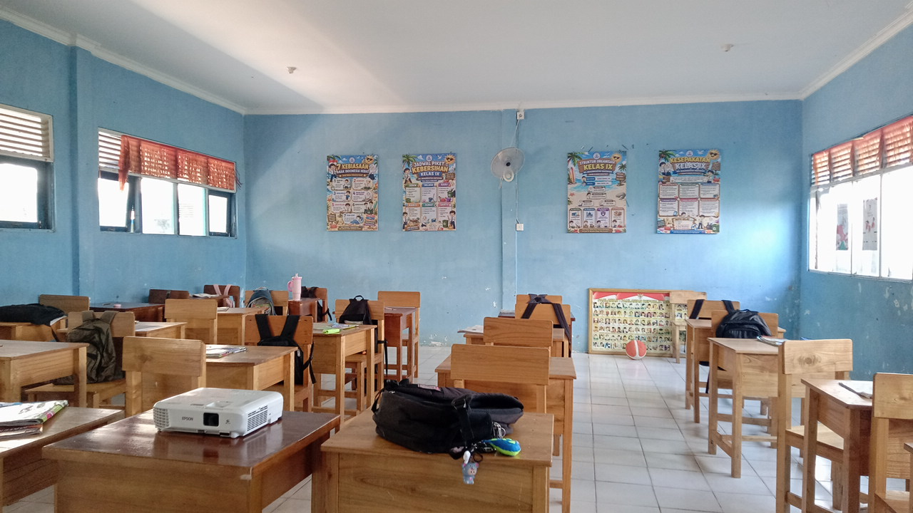
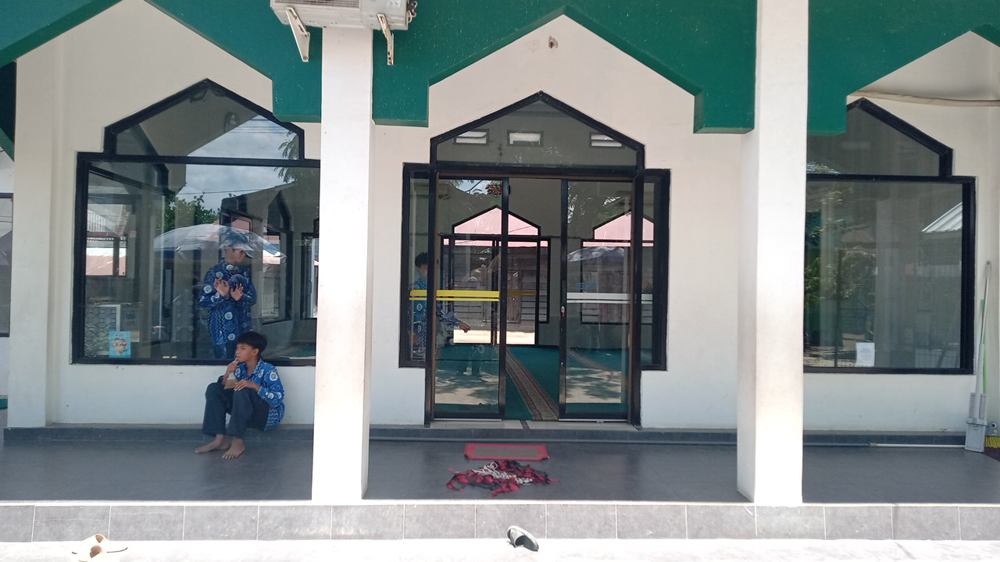
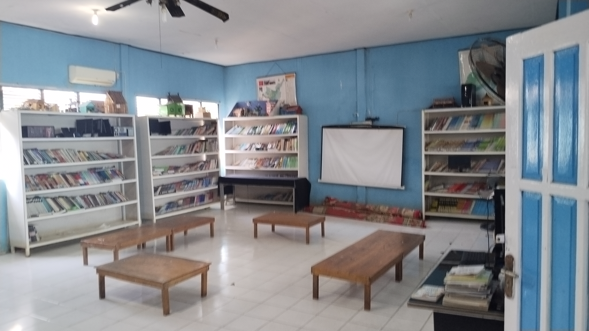
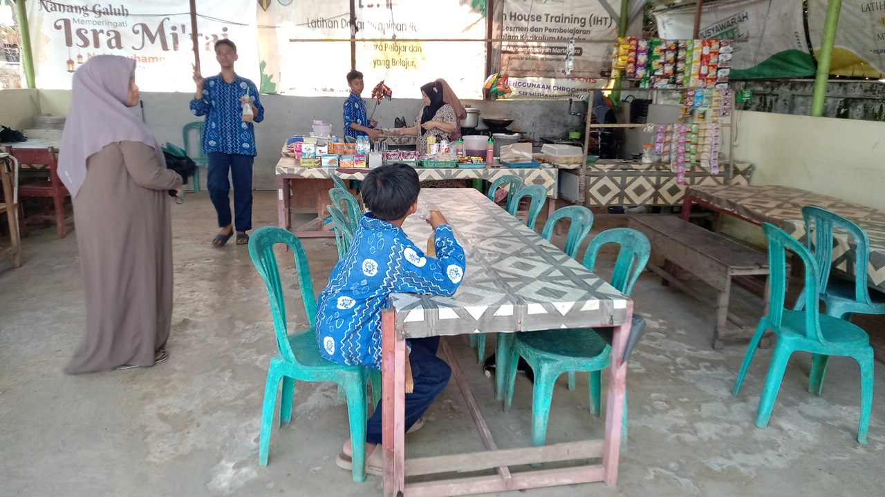

Ruang Kelas
Tempat berlangsungnya kegiatan belajar mengajar.

Mushala
Pusat kegiatan ibadah siswa.

Perpustakaan
Pusat literasi dan sumber belajar siswa.

Lapangan
Area terbuka untuk kegiatan olahraga, Ekstrakulikuler, dan madrasah.

Kantin
Tempat menyediakan makanan dan minuman bagi siswa.